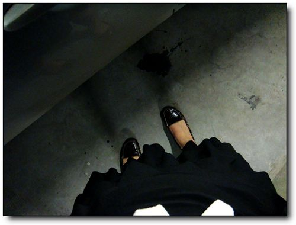
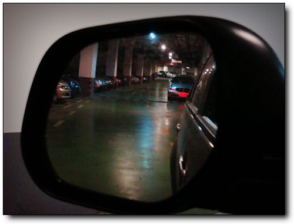

买来买去的困惑 @ Sep 03, 2009
一友韩国归来打算入手数码单反相机，于是向她推荐500D及自己的两只镜头。沟通到最后她问：“那你的350D呢？”这个。。。如果现在转手岂不是必须上新机身吗？那个无敌兔已经恢复到刚上市价位。为了给被我误解为全画幅的7D腾出价格空间，JS们卖的不是相机卖的是寂寞啊。。。我说我研究一下再答复你。
这次见过SHUWUA，以及她拍的许多好片，当她从环保包里掏出一个掌上相机，并告知其中某些照片为LEICA创作。。。那只老重的新镜头还没在我手里捂热，此状况出现多少让人有些震动。果真牛头狗头都不重要，重要的是相机后面的那个头？！可我已上了贼船，这过程总要经历了才能达到云淡风轻吧！？
SONY T300拍摄




4 Responses to “买来买去的困惑”
2009-09-04
500D好像有点过曝吧
但尼康的人像始终不尽人意
我在出了D80后又陷入了CN抉择
真是既生N何生C啊
2009-09-04
C拍人像应该比N有优势，对吗？
欧洲用C的多，国内用N的多。
2009-09-04
我觉得尼康拍起来有色差，像油画一样，拍风景总觉得拍出来比风景还美，拍蓝天那个蓝啊，快要慑人魂魄了。佳能就感觉真实多了。
2009-09-04
7D不是全副，是个首席太监机。
哪家机器都不是完美的，还是用RAW格式拍，后期处理以满足自己的审美要求吧。
Leave A Reply
存档只读，评论已关闭。